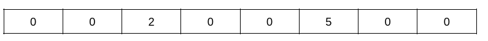
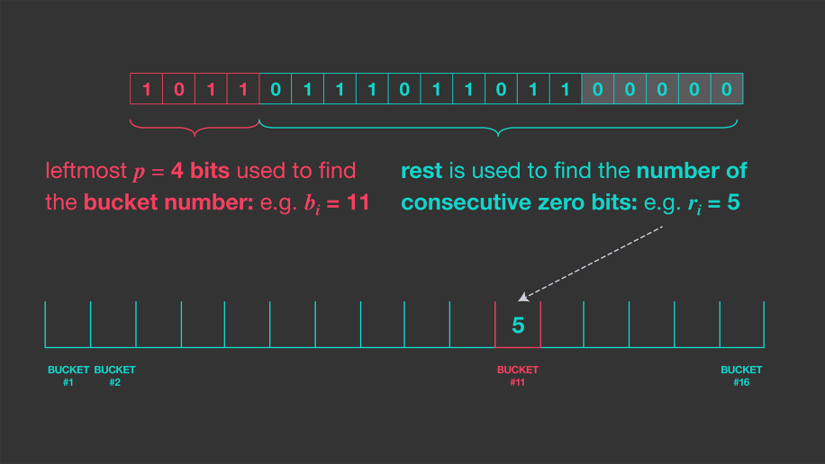
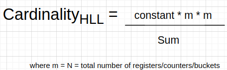

Project #0 - C++ Primer
Do not post your project on a public Github repository.
Overview
All the programming projects this semester will be written on the BusTub database management system. This system is written in C++. To make sure that you have the necessary C++ background, you must complete a simple programming assignment to assess your knowledge of basic C++ features. You will not be given a grade for this project, but you must complete the project with a perfect score before being allowed to proceed in the course. Any student unable to complete this assignment before the deadline will be asked to drop the course.
All of the code in this programming assignment must be written in C++. The projects will be specifically written for C++17, but we have found that it is generally sufficient to know C++11. If you have not used C++ before, here are some resources to help:
- 15-445 Bootcamp, which contains several small examples to get you familiar with C++11 features.
- Learncpp is a useful resource that includes quizzes to test your knowledge.
- cppreference has more detailed documentation of language internals.
- A Tour of C++ and Effective Modern C++ are also digitally available from the CMU library.
If you are using VSCode, we recommend you to install CMake Tools, C/C++ Extension Pack and clangd. After that, follow this tutorial to learn how to use the visual debugger in VSCode: Debug a C++ project in VS Code.
If you are using CLion, we recommend you to follow this tutorial: CLion Debugger Fundamentals.
If you prefer to use gdb for debugging, there are many tutorials available to teach you how to use gdb. Here are some that we have found useful:
- Debugging Under Unix: gdb Tutorial
- GDB Tutorial: Advanced Debugging Tips For C/C++ Programmers
- Give me 15 minutes & I'll change your view of GDB [VIDEO]
This is a single-person project that will be completed individually (i.e. no groups).
- Release Date: Aug 25, 2024
- Due Date: Sep 08, 2024 @ 11:59pm
Project Specification
Consider the problem of keeping track of the number of unique users accessing a website in a single day. Although this is straightforward with a small site only visited by a few people, it is much more difficult when dealing with a large site with billions of users. In such cases, storing each user in a list and checking for duplicates is impractical. The sheer volume of data leads to significant challenges, including running out of memory, slow processing times, and other inefficiencies.
The HyperLogLog (HLL) is a probablistic data structure that tracks the cardinality of large data sets. HyperLogLog is suited for scenarios like the above, where the goal is to count the number of unique items in a massive data stream without explicitly storing every item. HLL relies on a clever hashing mechanism and a compact data structure to provide accurate estimates of unique users while using only a fraction of the memory required by traditional methods. This makes HLL an essential tool in modern database analytics.
HLL provides probabilistic counting mechanism based on the following parameters:
b- Number of initial bits in a binary representation of a hash valuem- number of registers (or also called buckets) - can be considered as a memory block. They are equal to 2^b. (The terms "buckets" and "registers" can be used interchangeably when discussing HyperLogLog and tasks).p- leftmost position of 1 (MSBs position of1)
Consider a simple example of how this algorithm works using the string "A great database is a great life". First, the string is hashed to produce a hash value, which is then converted into its binary representation. From the hash value (binary form), b bits are extracted, starting from the most significant bit(MSB). The register value is calculated from the extracted bits. (by default each register has a value of 0).
From the remaining set of bits, the position of the leftmost 1 is obtained (MSB), i.e the number of leading zeros from left plus 1 (as given in the picture given below).

After this, using the b bits, the register value is calculated (which in the above case it’s 6). Hence, in register 6, max(register[6], p) will be stored.

Another value in a set may have p = 2 in register 3, hence 2 will be stored in register 3.

Now, another element in a set has p = 2 in register 6. Hence, max(register[6], p) –> max(5, 2) will be stored in register 6.
Similarly, another element having p = 4 in register 3, max(register[3], p) –> max (2, 4) will be stored in register 3.

After all the elements in the set have been added, cardinality is calculated in the following manner.
If there are total of m registers, then:
where constant = 0.79402 and R[j] is the value in register j and N = m.
Resources
To understand more about HLL and why they work,
- Short paper on the HyperLogLog. It contains the description of HyperLogLog.
- If you want a gentler intro on how it's probabilistic, check out this video and video for a simpler explanation.
- A blog on Meta's implementation of HLL - Presto
Note:
- In real-world implementations, some systems store the position of the leftmost 1 bit in a register (MSB), while others store the count of the rightmost contiguous zeros(LSB). In this project
- Task 1 will use the former approach, storing the position of the leftmost 1 bit in a register.
- Task 2 will use the latter approach, storing the count of the rightmost contiguous zeros in a register.
Instructions
You will have to complete the two functions part of this project:
Task #1
The first step is to implement a basic HyperLogLog data structure.
In hyperloglog.h, following functions have to be implemented:
HyperLogLog(inital_bits): a constructor where a number of leading bits (b) is provided.GetCardinality(): returns the cardinality value of a given setAddElem(val): computes and places the value in the register.ComputeCardinality(): computes the cardinality based on the above formula.
Along with it, you can implement helper functions to implement the above (can add more as per requirement):
ComputeBinary(hash_t hash): It computes a binary of a given hash value. The hash value should be converted to a 64 bit binary stream (otherwise tests may fail).PositionOfLeftmostOne(....): it computes the position of the leftmost 1.
For calculating hash, you can use the given function:
CalculateHash(...)- to calculate hash
Please refer to the std::bitset library for storing in binary representation.
When a value is obtained in decimal, convert into a greatest integer less than or equal to the decmial. Refer std::floor for more details.
Task #2
In the second step, you will implement Presto's dense layout implementation of HLL (Refer to the dense layout section).
Note: In Presto's implementation, the binary rightmost contiguous set of zeros are counted (instead of the left zero count). In this task, similar approach should be used.

The HLL stores overflow Buckets in the following manner: if the number of rightmost contiguous zeros are 33, its binary form will be 0100001. In this scenario, it will be split into two pars, first 3 MSBs 010 and the last 4 LSBs 0001. 0001 will be stored in the dense bucket, and the MSB 010 (which are overflowing bits) are stored in overflowing bucket.
In hyperloglog_presto.h following functions will be used for grading:
GetDenseBucket()- Returns the dense bucket arrayGetOverflowBucketOfIdx(..)- Returns the overflow set of bits for the given index (if it exists).GetCardinality()- Returns the cardinality value
Do not delete the above functions.
Implement the following functions:
HyperLogLogPresto(initial_bits)- a constructor for HyperLogLogPrestoAddElem()- computes and places the value in the register.ComputeCardinality()- computes the cardinality based on the above formula.
For calculating hash, you can use the given function:
CalculateHash(...)- to calculate hash
When a value is obtained in decimal, convert into a greatest integer less than or equal to the decmial.
Important Information
-
In Task 2, convert the hash value into 64-bit binary and then count the contiguous zeros (LSB).
-
For calculating cardinality in both Task 1 & Task 2, following steps should be followed.
- Calculate the sum of the exponents and store it in memory using a
doublevariable with default precision (no need for custom precision). The part of the formula to be stored in memory is shown below. Usestd::powfor calculating the exponents.

- Using the sum calculated above, determine the cardinality as shown below.

- After obtaining the result above, convert it to the greatest integer less than or equal to the value. (as mentioned above).
- Calculate the sum of the exponents and store it in memory using a
Failing to follow the steps above may result in inaccurate outcomes that do not align with the test cases.
Creating Your Own Project Repository
If the below git concepts (e.g., repository, merge, pull, fork) do not make sense to you, please spend some time learning git first.
Follow the instructions to setup your own PRIVATE repository and your own development branch. If you have previuosly forked the repository through the GitHub UI (by clicking Fork), PLEASE DO NOT PUSH ANY CODE TO YOUR PUBLIC FORKED REPOSITORY! Make sure your repository is PRIVATE before you git push any of your code.
If the instructor makes any changes to the code, you can merge the changes to your code by keeping your private repository connected to the CMU-DB master repository. Execute the following commands to add a remote source:
$ git remote add public https://github.com/cmu-db/bustub.git
You can then pull down the latest changes as needed during the semester:
$ git fetch public $ git merge public/master
Setting Up Your Development Environment
First install the packages that BusTub requires:
# Linux $ sudo build_support/packages.sh # macOS $ build_support/packages.sh
See the README for additional information on how to setup different OS environments.
To build the system from the commandline, execute the following commands:
$ mkdir build $ cd build $ cmake -DCMAKE_BUILD_TYPE=Debug .. $ make -j`nproc`
We recommend always configuring CMake in debug mode. This will enable you to output debug messages and check for memory leaks (more on this in below sections).
Testing
You can test the individual components of this assignment using our testing framework. We use GTest for unit test cases. You can disable tests in GTest by adding a DISABLED_ prefix to the test name. To run the tests from the command-line:
$ cd build $ make -j$(nproc) hyperloglog_test $ ./test/hyperloglog_test
In this project, there are no hidden tests. In the future, the provided tests in the starter code are only a subset of the all the tests that we will use to evaluate and grade your project. You should write additional test cases on your own to check the complete functionality of your implementation.
Make sure that you remove the DISABLED_ prefix from the test names otherwise they will not run!
Formatting
Your code must follow the Google C++ Style Guide. We use Clang to automatically check the quality of your source code. Your project grade will be zero if your submission fails any of these checks.
Execute the following commands to check your syntax. The format target will automatically correct your code. The check-lint and check-clang-tidy targets will print errors that you must manually fix to conform to our style guide.
$ make format $ make check-clang-tidy-p0
Memory Leaks
For this project, we use LLVM Address Sanitizer (ASAN) and Leak Sanitizer (LSAN) to check for memory errors. To enable ASAN and LSAN, configure CMake in debug mode and run tests as you normally would. If there is memory error, you will see a memory error report. Note that macOS only supports address sanitizer without leak sanitizer.
In some cases, address sanitizer might affect the usability of the debugger. In this case, you might need to disable all sanitizers by configuring the CMake project with:
$ cmake -DCMAKE_BUILD_TYPE=Debug -DBUSTUB_SANITIZER= ..
Development Hints
You can use BUSTUB_ASSERT for assertions in debug mode. Note that the statements within BUSTUB_ASSERT will NOT be executed in release mode.
If you have something to assert in all cases, use BUSTUB_ENSURE instead.
We will test your implementation in release mode. To compile your solution in release mode,
$ mkdir build_rel && cd build_rel $ cmake -DCMAKE_BUILD_TYPE=Release ..
Post all of your questions about this project on Piazza. Do not email the TAs directly with questions.
TAs will not look into your code or help you debug in this project.
Grading Rubric
In order to pass this project, you must ensure your code follows the following guidelines:
- Does the submission successfully execute all of the test cases and produce the correct answer?
- Does the submission execute without any memory leaks?
- Does the submission follow the code formatting and style policies?
Note that we will use additional test cases to grade your submission that are more complex than the sample test cases that we provide you in future projects.
Late Policy
There are no late days for this project.
Submission
You will submit your implementation to Gradescope:
Run this command in build directory and it will create a zip archive called project0-submission.zip that you can submit to Gradescope.
$ make submit-p0
Although you are allowed submit your answers as many times as you like, you should not treat Gradescope as your only debugging tool. Most students submit their projects near the deadline, and thus Gradescope will take longer to process the requests. You may not get feedback in a timely manner to help you debug problems. Furthermore, the output from Gradescope is unlikely to be as informative as the output from a debugger (like gdb), provided you invest some time in learning to use it.
CMU students should use the Gradescope course code announced on Piazza.
Collaboration Policy
- Every student must work individually on this assignment.
- Students are allowed to discuss high-level details about the project with others.
- Students are not allowed to copy the contents of a white-board after a group meeting with other students.
- Students are not allowed to copy solutions from another person.
- In this project, you are allowed to search on Google or ask ChatGPT high-level questions like "What is a HyperLogLog?",
"how to use
std::move".
WARNING: All of the code for this project must be your own. You may not copy source code from other students or other sources that you find on the web. Plagiarism will not be tolerated. See CMU's Policy on Academic Integrity for additional information.